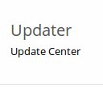

Upgrading ownCloud with the Updater App¶
The Updater app automates many of the steps of updating an ownCloud installation. You should keep your ownCloud server updated and not skip any releases. The Updater app is enabled in your ownCloud Server instance by default, which you can confirm by looking on your Apps page.
Note
The Updater app is not enabled and not supported in ownCloud Enterprise edition.
The Updater app is not included in the Linux packages on our Open Build Service, but only in the tar and zip archives. When you install ownCloud from packages you should keep it updated with your package manager.
Downgrading is not supported and risks corrupting your data! If you want to revert to an older ownCloud version, install it from scratch and then restore your data from backup. Before doing this, file a support ticket (if you have paid support) or ask for help in the ownCloud forums to see if your issue can be resolved without downgrading.
The Updater App is not required, and it is recommended to use other methods for keeping your ownCloud server up-to-date, if possible. (See Upgrading Your ownCloud Server.) The Updater App is useful for installations that do not have root access, such as shared hosting, for installations with a smaller number of users and data, and it automates updating manual installations.
Note
If you are using the Encryption app and upgrading from older versions of ownCloud to ownCloud 8.0, you must manually migrate your encryption keys with the occ command after the upgrade is complete, like this example for CentOS: sudo -u apache php occ encryption:migrate-keys You must run occ as your HTTP user. See Using the occ Command to learn more about occ
You should maintain regular backups (see Backing up ownCloud), and make a backup before every update. The Updater app does not backup your database or data directory.
The Updater app performs these operations:
- Creates an
updater_backupdirectory under your ownCloud data directory - Download and extracts updated package content into the
updater_backup/packageVersiondirectory - Makes a copy of your current ownCloud instance, except for your data
directory, to
updater_backup/currentVersion-randomstring - Moves all directories except
data,configandthemesfrom the current instance toupdater_backup/tmp - Moves all directories from
updater_backup/packageVersionto the current version - Copies your old
config.phpto the newconfig/directory
Follow these steps in order
Using the Updater app to update your ownCloud installation is just a few steps:
- You should see a notification at the top of any ownCloud page when there is a new update available:
- Even though the Updater app backs up important directories, you should always have your own current backups (See Backing up ownCloud for details.)
- Verify that the HTTP user on your system can write to your whole ownCloud directory; see the Setting Strong Permissions section below.
- Navigate to your Admin page and click the Update Center button under Updater:

- This takes you to the Updater control panel.
- Click Update, and carefully read the messages. If there are any problems it will tell you. The most common issue is directory permissions; your HTTP user needs write permissions to your whole ownCloud directory. (See Setting Strong Permissions.) Otherwise you will see messages about checking your installation and making backups.
{kind=link}
- Click Proceed, and then it performs the remaining steps, which takes a few minutes.
{kind=link}
- If your directory permissions are correct, a backup was made, and downloading the new ownCloud archive succeeded you will see the following screen. Click the Start Update button to complete your update:
Note
If you have a large ownCloud installation, at this point you
should use the occ upgrade command, running it as your HTTP user,
instead of clicking the Start Update button, in order to avoid PHP
timeouts. This example is for Ubuntu Linux:
$ sudo -u www-data php occ upgrade
Before completing the upgrade, ownCloud first runs a simulation by copying all
database tables to new tables, and then performs the upgrade on them, to ensure
that the upgrade will complete correctly. The copied tables are deleted after
the upgrade. This takes twice as much time, which on large installations can be
many hours, so you can omit this step with the --skip-migration-test
option, like this example on Ubuntu:
$ sudo -u www-data php occ upgrade --skip-migration-test
See Using the occ Command to learn more.
- It runs for a few minutes, and when it is finished displays a success message, which disappears after a short time.
Refresh your Admin page to verify your new version number. In the Updater section of your Admin page you can see the current status and backups. These are backups of your old and new ownCloud installations, and do not contain your data files. If your update works and there are no problems you can delete the backups from this screen.
{kind=link}
If the update fails, then you must update manually. (See Upgrading Your ownCloud Server.)
Can’t Login Without Updating¶
If you can’t login to your ownCloud installation without performing an update
first, this means that updated ownCloud files have already been downloaded to
your server, most likely via your Linux package manager during a routine system
update. So you only need to click the Start Update button, or run the occ
command to complete the update.
Setting Strong Permissions¶
For hardened security we highly recommend setting the permissions on your ownCloud directory as strictly as possible. These commands should be executed immediately after the initial installation. Please follow the steps in the Setting Strong Directory Permissions section of Installation Wizard.
These strict permissions will prevent the Updater app from working, as it needs your whole ownCloud directory to be owned by the HTTP user. The generic command to change ownership of all files and subdirectories in a directory to the HTTP user is:
chown -R <http-user>:<http-user> /path/to/owncloud/
This example is for Ubuntu 14.04 LTS server:
chown -R www-data:www-data /var/www/owncloud
Arch Linux:
chown -R http:http /path/to/owncloud/
Fedora:
chown -R apache:apache /path/to/owncloud/
openSUSE:
chown -R wwwrun:www /path/to/owncloud/
After the Updater app has run, you should re-apply the strict permissions.